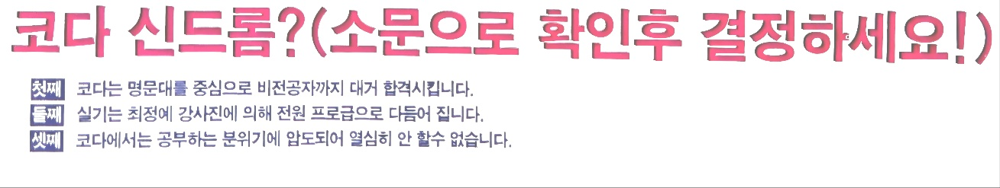
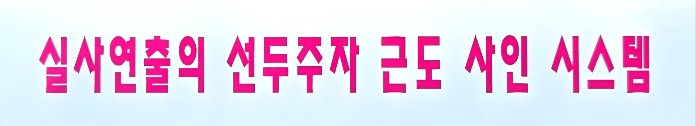
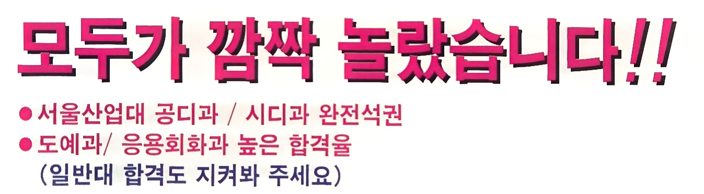
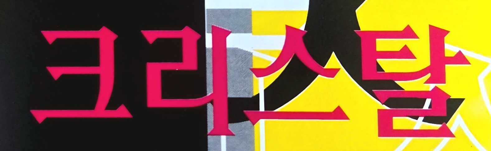
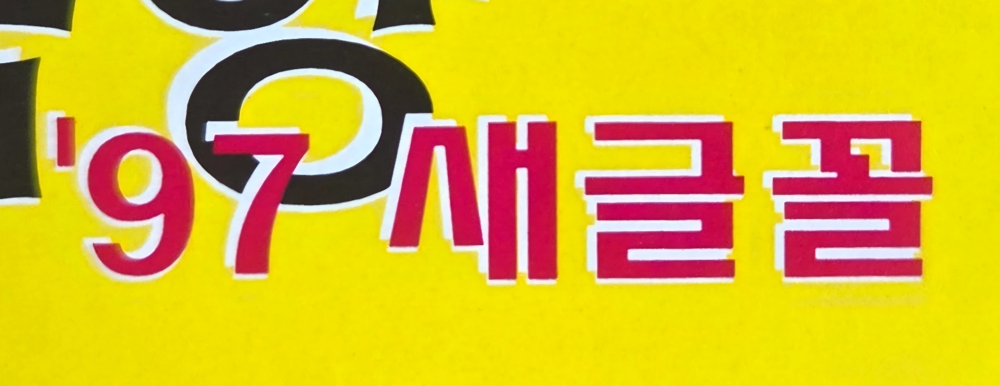
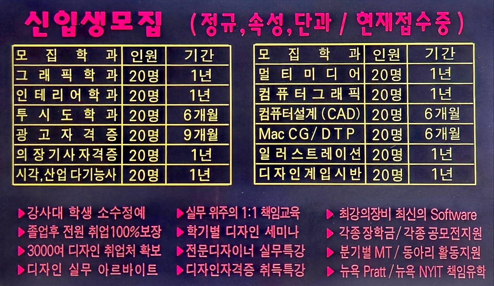
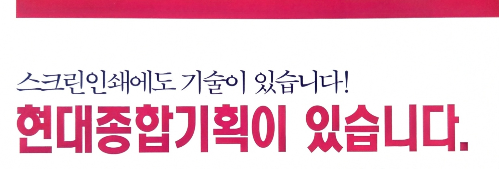
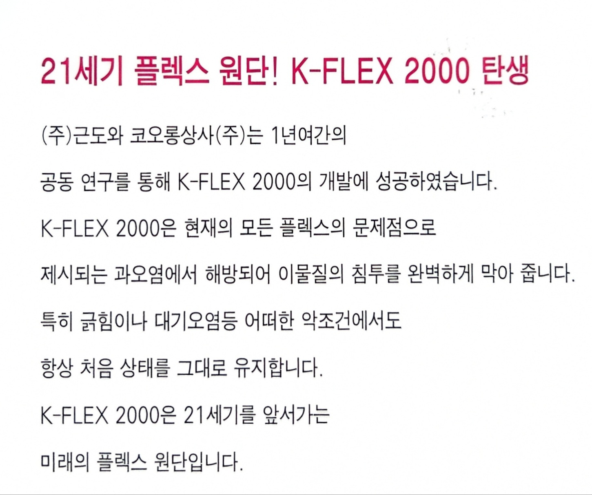

글, 배경, 그림이 함께 사용된 광고 속 분홍은 특정 요소를 강조하기 위한 색을 넘어 광고 전체의 분위기와 정체성을 형성하는 중심 색채로 사용되고 있다. 분홍은 글자를 강조하고, 배경을 구분하며, 그림의 감성을 강화하는 역할을 동시에 수행하면서 각각의 요소를 하나의 통합된 이미지로 묶는다. 따라서 이러한 사례에서 분홍은 브랜드 이미지 구축, 감성 전달, 시선 유도, 소비자층 암시, 그리고 1990년대 후반 디자인 트렌드를 드러내는 핵심 시각 언어로 기능하고 있다고 볼 수 있다.